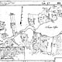
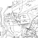

Artikel av Bengt Löf. Tidigare publicerad i tidningen Rovbladet.
Fjärdarna och holmarna i den nedre delen av Dalälven ger idag hela området dess karaktär som vi så väl känner och uppskattar. Älven har bara runnit genom våra trakter sedan någon gång efter sista istiden då israndlinjen för c:a 9600 – 9700 år sedan fanns vid Avesta. Badelundaåsen hade bildats under inlandsisen och det blev nu en barriär mot den gamla flodfåran (Nedre Dalälven 2000 Länsstyrelsen). Tiden som älven har passerat Hedesunda är väl närmast en blinkning sett ur jordens historia.
Genom att älvsträckningen är så ung har det ännu inte bildats en riktig älvfåra. Även om det utan mänsklig inblandning nog hade blivit så 1916 från Ingsjön ner över Tierp och ut i Tämnarån. Med dagens dammar lär vattnet liksom laxen hållas sig inom vattendomens råmärken för lång tid framöver.
I nedre Dalälvens flacka landskap har ganska stora arealer av ängsmarker bildats och utvecklats till slåtterängar. Det finns inte så många liknade större vårflodsöversvämmade älvdalar i Sverige där gräset bara finns utan att man behöver sköta marken annat än genom slåtter. Det är ju vårfloderna som vattnat älvängarna och somrarna som normalt torkat upp dem tillräckligt för att gräs- och starrväxer skall trivas. Å andra sidan har det funnits stora arealer med slåtterängar i andra former i Sverige. Beteckningar som Kärräng, mossäng, sidvallsäng, hårdvallsäng, siläng och löväng finns i litteraturen. Det som i Hedesunda heter älväng kallas också raning. En bra källa för ängsslåtter är Nordiska Museets Fataburen. Här kan man också se hur stor areal som var ängsmark i Sverige för c:a 100 år sedan. Vi talar om 1,99 milj. hektar 1870 och en minskning till 0,93 milj. ha 1920. I Norrland fanns den största arealen och många av ängarna odlades upp under nämnda tid fram till 1930-talet ungefär. Som en jämförelser kan nämnas att all jordbruksmark i landet inklusive ängsmarker var 1920 4,8 milj ha (Jordbruksverket Statistikrapport 2005:6).
När man ser att många gårdar i Hedesunda har en bit mark på en eller flera älvängar förstår man att fodret från denna slåtter var ett viktigt tillskott till vinterfodret för djuren. En annan indikation på älvängarnas betydelse är att Hedesunda socken var en kotät socken i Gästrikland under lång tid.
Uppdelningen av slåtterängarna mellan byar och gårdar finns dokumenterad genom skattläggning och i sen tid avrösning. Här är några exempel vad gäller Somfarmyran:
På en gammal karta från 1669 (Lanmäteriet Hedesunda nr 45) som fastställer sockengränser finns Somfarmyran med under beteckningen ”Uthanwals engs” tillsammans med utomälvens viktigaste byar.
På delningskartan av Öns marker 1773 (Lantmäteriet Hedesunda nr 109) finns de 8 hemmanen på Ön med i avstyckade lotter och de två i Dalkarlsbo med hela byn samt Fryggesbo avrösad. Övriga lotter finns markerade med 8 bynamn – Sewalbo även kyrkbåtsvägen, Wästbyggeby, Berg, Hadeholm, Ålbo, Holm, Wall, Rångsta..
I rösläggningen under åren 1939 till 1957 (Lantmäteriet 1/39)omfattar slåtterängarna 100,38 ha som ligger runt Somfarsjön och Somfarån och ytan är uppdelad i 92 lotter. Här har lantmäteriet gått igenom i akter vad som fanns och nu har man hittat lotter också från Ölbo. I den sämjedelning man beskrev då har Ön största andelen mark eller 31 ha. Sedan kommer Dalkarlsbo 19,4, Sevalbo 12,8, Hade 8,1, Ölbo 6,9, Fröjesbo 5,9, Berg 5,0, Ålbo 3,7, Vall 2,5, Västbyggeby 2,2, Holmen 1,7 och Rångsta 1,2 ha.
Under åren för denna förrättning kom en vattendom som skulle lägga i stort sett alla ängstegar under vatten. Därför blev det bara en avrösning och ingen uppdelning mellan byarna. Och alltsedan dess är Somfarmyran en samfällighet. I arealen ingår också en mindre del skog i ängskanterna. Många av tegarna är långsmala i riktning mot sjön och kanske gäller här liksom på Gävan att många tegar hade en bredd av ”sex liebredder”
På Somfarmyran var uppdelningen tydlig vad gäller byarnas del och Öns hemman. Vi har också kvar en skiss över hur Dalkarlsbo by delade upp sina slåttertegar. Min far Erik Löv har ritat in de olika tegarna på en karta och skrivit ner vad de hette. Här visar han också på att två tegar som hävdats av Dalkarlsbo är inritade på rösläggningskartan hos andra. Det gäller hälften av Rångsta’s teg och ett område innanför ön Fiskkammar som heter Långholmen och som på kartan tillhör Ön. Eftersom marken vid förrättningen var värdelös kom detta inte upp 1957. Men i min farfars dagböcker är de med. Finns det månne någon i Rångsta eller på Ön som vet något om detta?
Slåttern av älvängarna gjordes inte på samma sätt som slåttern på åkermarken och inte heller som slåttern på slogbackarna. Backarna låg ju i anslutning till en åker och var en del av den instängda odlade marken. Och det var därför möjligt att räfsa eller bära ner det slagna höet till närmaste hässja på åkermarken.
Ute på ängarna var det annorlunda förhållanden för marken. Dränering var det naturligtvis inte tal om här och älvens vattennivå fanns ju några decimeter från änget där jorden sög upp fukt mycket lätt. Här måste det därför bli ett annat förfarande vid slåttern. Genom min farfar Olof Löf’s dagböcker kan man få en bra bild hur skörden gick till.
Innan jag går in på det vill jag försöka förklara ordet änget ovan. Efter att ha studerat åtskilliga år av dagböckerna kan jag säga att änget användes bara för de älvängar som vi talar om här och de ängar som ännu inte hade dikats ut till åker på högre höjd. I andra sammanhang skriver han ängen. I Hedesunda talar man också men inte alltid om ordet mur när man menar en slåttermyr i rikssvenskan. Båda dessa specialformer tyder på att dessa marker var betydelsefulla för befolkningen. Har jag tolkat detta rätt?
För att få en bild över hur ängsslåttern gick till har jag gått igenom åren 1910 – 1920 i min Olof Löf’s dagböcker. Den första fasen är naturligtvis själva lieslåttern. Den började alltid efter slåttern på slogbackarna och åkermarken och startade mellan 25 juli till 15 augusti med ett undantag. Och det var 1915 då han hade startat grundarbetena för den nya ladugården och odlade en hel del ettårigt grönfoder. Detta år kom ängsslåttern efter slåttern av säden vilket inte hände annars.
Slåttern var ju sen och gräset – starren måste ha varit utväxt även om växten kom igång sent på grund av översvämningarna i början av juni. Dessutom var gräsväxten gles så man lät liesträngarna ligga för torkning på slag. Det finns aldrig omnämnt ”härs” i samband med ängsslåttern. Inom någon dag ibland t.o.m. samma dag bar man in höet på hävlar i en ängslada eller lade i en stackstol utomhus.
Ordet stackstol finns benämnt i Svenska Akademins ordbok som en sammansättning av stack och stol. Stolpen i mitten benämns också förutom stol sto, stod, stud och stut. I en artikel i Uppsala Nya Tidning från 1947 av Skansenintendenten Carl Fries beskriver han med hjälp av skogsförvaltaren i Österfärnebo att ”stackstol d.v.s. en stol eller underbyggnad till en höstack” Själv ser han den tomma stackstolarna som ”några egendomliga konstruktioner av träslanor hopspikade till något som liknade ett lågt bord med en stör i mitten”. En bekräftelse i ord på denna torkmetod är att ett sämjedelat äng på Dalkarlsbos marker heter Stacksänget – ett ord som hittats i text under 1500-talet och som kunde betyda en areal stor nog för en stackstol.
I Dalkarlsbo fanns det lador som för det mesta räckte till för att förvara ängshöet. Några av dem fanns ute på änget andra i skogsbackar med direktkontakt till änget. Ladbruket var ju utbrett inom alla utägor eftersom ladugårdskullen inte var särskilt stor när de timrades och effektiva transporter inte gick att ordna under skördetiden. När man ibland slog även på andra byars lotter på älvängarna fick man bygga en stackstol. Jag har själv i min ungdom sett resterna av en sådan.
Sedan höet bärgats väntade man på bra före för hemkörningen och det skedde för ladorna ute på änget under början av vintern när det kunde vara renisat. För det mesta skedde hemtransporten under december och januari månader och några gånger under senvintern. Då fanns det också plats på ladugårdsskullen eftersom höet från åkrarna började ta slut får man förmoda. När föret senare under vintern inte var lika säkert på änget körde man hem hö från andra utägorslador.
För det mesta var lastbäraren en ”stege” monterad på två kälkar på ett liknade sätt som kolstigarna.
Jag har sett en stege på Per Nirs i Dalkarlsbo och om man lastade hö på den kunde bottenytan vara 3,6 meter lång och 1,7 meter bred när man lade ut höet och trampade ner det. Om höjden var 1,5 meter skulle ju volymen vara 9 m3 och vikten upp emot 400 Kg på vintern. Detta kan vara ett ungefärligt värde eftersom vi vet att Olof Löf och hans bror Anders Ersson körde hem ett lass av pressad havrehalm med vikten 780 Kg från Västbyggeby både den 23/2 och den 24/2 1928. I det fallet körde de på isen men på änget var det ju mjukare underlag så vikten blev mindre.
Ladorna som användes vid älvängarna i Hedesunda var små och av en mycket speciell konstruktion med tre timrade väggar och en öppen gavel som täcktes av horisontellt staplade plankor i stället för att ha dörrar. Dessa lador betraktas av Länsmuseet och Länsstyrelsen som typiska för Hedesunda och älvängarna. Det märkliga är att de här ladorna med en hel öppen gavel upp till gavelröstet inte tycks vara vanliga någon annanstans. Och så står de bara där och väntar på att bli upptäckta!
Det finns två sådana kvar i ängskanten i Dalkarlsbo. Båda står på högre terräng än själva änget och är i bra skick tack vare placeringen och sina plåttak. Båda är delvis byggda av återvunnet timmer. Den ena tillhörande Per Nirs har flyttats c:a 200 meter österut av min far när den Vattenfalls första stora kraftledning byggdes. Den stod i kanten mellan Per Nirs Lillteg och Hoptegen, en gemensam teg, och kallas Hagleddsladan efter den grind som fanns mot hästhagen.
Den är 4,2 meter lång och 3,4 meter bred. Höjden är 2,8 m till nock och till väggbandet är 1,6 meter. Golvet består av slanor som ligger med ändarna mot långsidorna. Taket har den här vanliga lutningen av 30 grader. Hela ladan rymmer 27 m3 och om man packade den full med hö på sommaren blir det ungefär 1 ton hö. Till vintern sjunker det ihop till endast 13 m3.
Matematiken som används här kring höets volym och vikt finns i ett gammalt mått som heter parm och som hos kronan var 5,65 m3. Vikten för en parm var 40 lispund eller 340 kg. För sommarhö var den 25 lispund eller 213 kg och för ett vinterhö 50 lispund eller 425 kg.
Den andra ladan, som tillhör Per Jons står i kanten på Hoptegen och nära Per Jons Lillteg. Till den hörde också ett litet äng alldeles utanför. Den är 3,8 meter lång och 2,9 meter till nock. Upp till väggbandet är det 1,9 meter och taket lutar även här 30 grader. Volymen är c:a 23 m3 och på sommaren kunde man alltså få in 900 kg hö.
Längre ut på Stortegen har det också stått två lador som nu har rasat ner till gräsnivå. Även på Stacksänget fanns förut en lada. På Storänget hade Per Nirs och Anders Ers en nyare lada som byggdes på totalt 20 dagsverken under sommaren 1923 och den hade dörrar. En annan lada med dörrar till detta äng stod på fastlandet. Den är idag uthus till min sommarstuga. Per Jons har två lador till storänget. Den ena, tyvärr rasad, stod ute på änget och den andra står på fastmark nedanför Anders Ers och har också dörrar. Längre ut på Somfarmyran finns ytterligare en älvängslada innanför ön Fiskammar på Långholmen. Den är något skadad nu. Jag har ingen uppgift om det också fanns en lada vid Per Jons vide som ju låg längst bort från byn.
Eftersom lador täckta med plankor i en hel gavel är sällsynta kan man fråga sig varför de blev gjorda så. Det kan tänkas att följande tre försök till förklaring kan ge ett svar. Konstruktionen ger möjlighet till stora rörelser på grund av tjäle utan att dörrarna kommer snett. De öppnades också bara några få gånger om året så arbetet med att öppna och stänga var inte avgörande Sedan finns det en fördel i att kunna gå in i ladan och tömma ”bölan” som man kom med från änget på hävlarna. När botten är fylld kan man också använda plankorna som en brygga. Och till sist behöver man inte skotta så mycket snö när man hämtar höet på vintern. Inte så dumt eller hur.
Eftersom ladorna är speciella för Hedesunda så vitt jag vet nu är det av intresse att få information om det finns andra lador av denna typ kvar någon annan stans i Hedesunda. Om ni vet något är Erika Åberg på Länsmuseet Gävleborg intresserad att forska vidare om dessa lador. Ni når henne på erika.aberg@xlm.se eller telefon 026-655612
Farfars dagböcker ger ingen entydig information om hur stor skörden var per hektar eller per år. Enligt hans anteckningar var antalet lass/stege/skrinda till omkring 5 per år vilket då skulle indikera sådär 2 ton hö. Hans areal enligt sämjedelningskartan var ungefär 5 ha och den enda skörden man tog tillvara kan uppskattas till kanske 400 kg/ha även om den måste ha varierat mycket beroende på älvens vattenföring och sommarens karaktär.
Det finns inte så mycket dokumenterat om hur stor skörd det var frågan om. Jag har hittat en uppgift i avrösningsakten från 1957 och det gäller en slåtteräng vid Norrudden i mellan Hällskogsfjärden och Bergfjärden. Genom ett misstag i tidigare akter har Kungsgården 1 fått mark i Somfarmyran men den marken låg som sagt långt därifrån. I beskrivningen av denna äng nämner lantmätaren att ytan var 1,16 ha och skatteunderlaget 2 parmar hö dvs. 680 Kg. De skulle då vara 586 kg per ha eller som nyskördat sommarhö13,3 m3.
Jordmånen och höjden över älvens normala vattenstånd har naturligtvis betydelse för hur stor skörden kunde bli. Sigeränget i Lågbo ligger högre än Somfarmyrans ängar och här uppskattas skörden vara 2 ton på endast 3 ha enligt en uppskattning av reservatsförvaltaren för Bredforsens naturreservat Karl Martin Olsson i Kågbo. Det skulle ju betyda omkring 670 kg eller nästan 17 m3 per hektar mätt som sommarhö. Här står vattnet normalt inte över ängarna under vårfloden vilket var det vanliga på Somfarmyrans dyjordar. Det och jordmånen ger stora skillnader i skörd.
Ett annat sätt att förstå hur stor skörden var är att se på ladstorleken och jämföra med arealen. Ladorna var små här och byggda för att rymma skörden inom ”hävelavstånd”. Ett äng i Dalkarlsbo som delvis är avskilt med en lada i mitten är större delen av Storänget som tillhörde Per Nirs. Det är ett äng om 4,5 hektar varav c:a 3 ha var enklast att bära till denna lada. Ladan där var något större än de ovan beskrivna, c:a 35 m3. Den skulle alltså rymma 1,2 ton sommarhö och tre lass vid hemkörning. Vi kommer även här till 400 kg per hektar i skörd även om beräkningen inte är så säker.
I farfars dagböcker finns ibland anteckningar om hur många bölor han skördade i ladorna från änget. En sammanhållen bild finns 4 – 5 augusti 1932. Han skördade då 58 bölor på ängarna närmast byn och detta år dessutom körde han senare hem hö från den längre bort liggande Långholmen och det kunde vara 12 bölor om det var samma skörd som han antecknat 12/8 1925. Dessutom lade han 25 böler i en stackstol som han slog på en teg som tillhörde Rångsta. Om vi antar att en böla är 0,8 kubikmeter och väger 38 kilo enligt Parmmåttet ovan ser vi att han tog in 2,1 ton på egen mark och 750 Kg i stacken på Rångstategen.
Ordet böla är enligt Fataburen 1925 detsamma som vålm. Om man vålmade på sura marker flyttade man vålmen/bölan genom att sticka in hävlar under och bära upp den till ett torrare ställe. På älvängarna vålmade man inte men order böla fick följa med i språkbruket.
För min farfar gav alltså änget någonting i storleksordningen 2 ton ängshö på de 5 hektaren. Per Nirs var på den tiden delat mellan två bröder. Vilken betydelse hade dessa 2 ton hö om man ser till gårdens ekonomi? Ett sätt att få reda på det är ju hur många djur man kunde föda under installningsperioden på c:a 200 dagar per år. Här får vi ta hjälp av Nordiska Museets tidskrift Fataburen igen.
Om vi börjar med korna är det som gäller idag inte riktigt jämförbart. Mjölkmängden hos en ko var endast 600 kg per år under 1700-talet för att öka till 1000 kg på 1870-talet enligt Det svenska Jordbrukets Historia. Korna var lättare då och inköpt kraftfoder förutom eget gröpe och rovor var inte alls vanligt. Under tiden när korna var inomhus är en hökonsumtion om c:a 5 kg per dag under början av 1900 – talet en uppgift som jag använt här. Idag är en vanlig högiva 8 kg per dag och till det utfodras kraftfoder utöver gröpe.
Ängshöets fodervärde var bra och i stort likvärdigt med timotejdominerat hö från åkrarna (Fataburen 1923). Den sena skördetiden för allt hö gjorde förstås att vi inte kan jämföra kvaliteten med idag men komplettering med olika grönfoder som fodervicker hjälpte också upp fodergivans kvalitet. Detta betyder att ytterligare två kor kunde finnas på gården hos Per Nirs även efter hemmansklyvningen utöver de sex han troligen hade. Om vi ser tillbaka till 1840 – talet och före uppdelningen kunde gården ha upp till sex kor och två hästar. Vid denna tid då farfars farfar Per Ersson var bonde kunde alltså fyra kor få hö från ängsslåttern på vintern. Och här anar man betydelsen av ängslåttern eftersom det också fanns c:a 4 ha mindre areal uppodlad åker då.
När det gäller min farfars försörjning och nödvändiga kontantinkomster ser man också att han hade två kor som han sålde smör från för att få in denna inkomst. Det finns alltså ett samband mellan familjens levnadsstandard och tillgången av ängshö.
Hedesunda hade alltså möjlighet att ha fler kor per gård än de flesta andra socknarna i Gästrikland tack vare älvängarna. Denna tillgång är kanske inte så uppmärksammad när det gäller försörjningen som den borde vara särskilt om vi tittar på tiden före 1900 – talet. Det finns en del entusiaster som tagit upp ängsslåttern igen och det är i första hand Sigeränget i Lågbo och Nordmyran i Tärnsjö.
Det har gjorts en del undersökningar av älvängarna i modern tid som en del av Naturvårdsverkets Natura 2000-projekt. Nu finns en nationalpark i väster och några naturreservat redan avsatta för framtiden. Det pågår också flera utredningar om olika skydd för hela området i nedre Dalälven. En bra genomgång av naturvärden finns på hemsidan www.nedredalalven.se . Under rubriken NeDa finns en Remissversion av en Biosfärsförundersökning och den är mycket omfattande. Under 1980-talet utsåg också staten hela området som ett av 25 primära rekreationsområden i Sverige.
Tyvärr är ju Somfarmyran nu satt under vatten så den är inte möjlig att ha slåtter på den längre. Men i fantasin kan man tänka på när det fanns kanske 20 slåtterlag som under några dagar i augusti byggde upp en mäktig höstacksmiljö på Somfarmyran. Det måste ha varit något att tala om på kyrkbacken och kanske var det ett möte för livet för ungdomar. Idag anser vi förstås att slåttern av älvängarna är ekonomiskt vansinne men när man ser att det kunde bidra till att köpa in nödvändiga varor för att klara sig inser man att Dalälvens slåtterängar var en viktig faktor som kanske förhindrade en utflyttning under 1800-talet och en större utvandring från Hedesunda till Amerika.
Fantasin kan faktiskt bytas ut mot en verklig upplevelse som går att få om man besöker Sigeränget under skördetiden. Där skär liarna in i historiens vingslag och ni kan direkt uppleva hur våra förfäder under 100-tals år har tagit tillvara älvängarnas möjligheter att ge vinterfoder.
{kind=link}
{kind=link}
{kind=link}